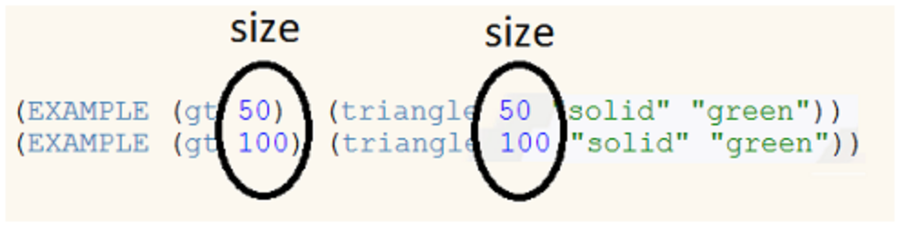

Los estudiantes son introducidos al área de definiciones, y aprenden la sintaxis para definir valores de varios tipos. También se introducen en la sintaxis de definir funciones y crear ejemplos.
Los estándares con el prefijo BS son específicos de Bootstrap; Otros son del Common Core. Pase el mouse sobre cada estándar para ver sus correspondientes declaraciones de evidencia. Nuestra Documento de estándares Muestra qué unidades cubren cada estándar.
6.NS.5-8: The student performs operations with negative numbers, works with the number line and coordinate plane, order and absolute value of numbers, and solves real-world problems with rational numbers.
graphs of negative numbers on the number line.
7.EE.3-4: The student uses numerical and algebraic expressions and equations to solve real-life and mathematical problems
use of variables to represent quantities in a real-world or mathematical problem
A-SSE.1-2: The student interprets the structure of expressions to solve problems in context
interpretation of expressions that represent a quantity in context
F-BF.1-2: The student models a relationship between two quantities by building a function
use of recursive and explicit formulas to write arithmetic and geometric sequences to model situations
F-IF.1-3: The student uses function notation to describe, evaluate, and interpret functions in terms of domain and range
explanation that if f is a function and x is an element of its domain, then f(x) denotes the output of f corresponding to the input x
evaluation of functions using function notation for inputs in their domains
F-IF.4-6: The student interprets the behavior of functions that arise in applications in terms of the context
interpretation of a relationship between two quantities in a table or graph in terms of key features
BS-DR.1: The student is able to translate a word problem into a Contract and Purpose Statement
given a word problem, identify the domain and range of a function
BS-DR.2: The student can derive test cases for a given contract and purpose statement
given a Contract and a Purpose Statement, write multiple examples or test cases
given multiple examples, identify patterns in order to label and name the variables
BS-DR.3: Given multiple test cases, the student can define a function
given examples and labeled variable(s), define the function
BS-IDE: The student is familiar with using a REPL, entering expressions properly, and interpreting error messages
enter and evaluate expressions on the computer
look to error messages as a way of diagnosing syntax errors
BS-PL.2: The student is comfortable using and writing Contracts for built-in functions
representing a function’s input and output using a contract
BS-PL.3: The student is able to use the syntax of the programming language to define values and functions
defining and retrieving values
writing test cases
defining and using functions
Duración: 100 Minutos
Glosario:
contrato: una declaración del nombre, dominio y rango de una función
define: asociar un nombre descriptivo con un valor
definición de función: que designa una función, enumera sus variables e indica la expresión a calcular cuando se utiliza la función
dominio: el tipo de datos que espera una función
ejemplos: muestra el uso de una función en entradas específicas y el cálculo que debe realizar la función en esas entradas
nombre: cómo nos referimos a una función o valor definido en un idioma (ejemplos: +, *, estrella, círculo)
nombre de variable: nombre de la información que puede ser diferente cada vez que se utiliza una función
rango: el tipo de datos que produce una función
receta de diseño: una secuencia de pasos que ayuda a las personas a documentar, probar y escribir funciones
tipo: se refiere a un tipo general de datos, como Number, String, Image o Boolean
valor: una pieza específica de datos, como 5 o " hello "
área de definiciones: el cuadro de texto en el Editor (DrRacket o WeScheme), donde se escriben definiciones de valores y funciones
Materiales:
Preparación:
Tipos
Funciones
Values
Number
+ - * / sqr sqrt expt
1 ,4 ,44.6
String
string-append string-length
"hello"
Image
rectangle circle triangle ellipse star scale rotate put-image
(circle 25 "solid" "red")
Revisión
Repaso
Objetivos de aprendizaje
Declaraciones de evidencia
Resultados del Producto
Materiales
Lapiceros/lápices para los estudiantes, marcadores de pizarra para profesores
Cartel de clase (Lista de reglas, tabla de lenguaje, calendario del curso)
RevisiónHasta ahora, has visto los Círculos de Evaluación, aprendido sobre Contratos y experimentado con múltiples tipos de datos. Asegúrate de recordar qué es cada uno de ellos, y mira hacia atrás en las lecciones anteriores para recordar si es necesario.
¿Puedes pensar en tres funciones que dibujen formas? Ve si puedes escribir tus contratos sin necesidad de mirar hacia atrás en su página de contratos.
¿Qué tipo de datos está siempre entre comillas?
¿Cuáles son las coordenadas de la esquina inferior izquierda de la pantalla? ¿Qué pasa con la parte superior derecha?
Review Circles of Evaluation, paying special attention to tipos and contratos.
Make sure that students are comfortable hearing - and using - the proper terminology to describe code.
Definiendo Variables
Repaso
Students define names for simple values (Numbers, Strings and Images) and use them in expressions.
Objetivos de aprendizaje
Declaraciones de evidencia
Students will be able to define names for Number, String and Image values.
Students will be able to identify the name, domain, range, and variable name for a function, when presented with a completed Design Recipe.
Students will be able to explain what happens when the "Run" button is pressed.
Resultados del Producto
Materiales
Lapiceros/lápices para los estudiantes, marcadores de pizarra para profesores
Cartel de clase (Lista de reglas, tabla de lenguaje, calendario del curso)
Entorno de edición (WeScheme o DrRacket con el bootstrap-teachpack instalado)
Tabla de Lenguaje (Vea abajo)
Preparación
Definiendo Variables(Tiempo 10 mins)
Definiendo VariablesSupongamos que queremos hacer una imagen que tenía cincuenta triángulos rojos idénticos y sólidos.
¡Tendrías que escribir (triangle 50 "solid" "red") cincuenta veces! ¡Para empeorar las cosas, cualquier cambio en esos triángulos tendría que ser repetido para las cincuenta expresiones! Los buenos programadores saben que es mejor invertir su esfuerzo en otras cosas, así que se aseguraron de que los lenguajes de programación tengan una manera de evitar toda esa repetición.
Escriben algo una vez, lo definen como un acceso directo en el idioma y luego usan el acceso directo donde quieran.
Nombramos valores en nuestro lenguaje mediante las sentencias define. Miremos
an example of a definition
, Que define a shape1 como un triángulo rojo sólido. Al hacer clic en "Run",
puedes evaluar shape1 en el área Interacciones y el ordenador le mostrará el triángulo.
¿Qué crees que pasaría si evaluaras shape1sin hacer clic en "Run"?
Make sure students see what happens when shape1 is evaluated without first clicking "Run", so they
can read and understand the error. Similarly, have them change the definition and evaluate shape1
again - still without clicking "Run". It’s important for them to understand that running a program
causes the computer to read the definitions, and that any change requires it to re-read them.
Las definiciones van en el área izquierda de tu editor. Esta es llamada área de definiciones.
Ingresa la definición shape1 en el área de definiciones.
Haz clic en "Run" para que la computadora lea esa definición.
¿Qué crees que sucederá cuando evalúes shape1 en el área de interacción?
Agrega una nueva línea al área de definiciones, justo abajo de la definición de shape1.
Agrega una nueva definición llamada shape2, y define que sea un círculo azul solido con 20 de radio.
Haz clic en "Run" e intenta evaluar shape2.
En la siguiente línea, define un nuevo valor llamado age que sea el número de años de edad que tienes.
En la siguiente línea, define un nuevo valor llamado name que sea una cadena que represente tu edad.
Cada vez que se hace clic en "Ejecutar", el equipo lee todas las definiciones y las agrega al idioma. Si se cambia una definición, el equipo seguirá utilizando la definición anterior hasta que se haga clic en la próxima vez que se ejecute "Ejecutar".
En una nueva línea del área de Definiciones, define un valor llamado eye-color que sea el color de tus ojos.
¡Todavía no hagas clic en "Run"!
Ve al área de Interacciones e intenta evaluar eye-color. Tú deberías obtener un mensaje de error que la computadora no sabe sobre eye-color,
porque no hiciste clic en "Run" después de agregar la definición.
Haz clic en "Run".
Intenta preguntar por eye-color nuevamente en el área de interacciones. Esta vez ya no deberías obtener el error.
Las definiciones son útiles porque podemos reutilizarlas en otras expresiones. Por ejemplo, podríamos usar eye-color
dentro de otra expresión, como (circle 10 "solid" eye-color). Práctica usando definiciones dentro de otras expresiones.
Cree las siguientes definiciones en el área Definiciones y compruébelas en el área Interacciones:
Define un valor llamado prize que sea una estrella amarilla solida (tú eliges el tamaño).
Define un valor llamado big que utilice scale para hacer tu prize tres veces más grande.
Define un valor llamado tilt que utilice rotate para girar tu gran estrella amarilla por 45 grados.
Digita tilt en el área de Interacciones, y asegurate de obtener una gran estrella amarilla inclinada.
Parece que las estrellas verdes son mas populares que las amarillas. Cambia tu expresión en tu definición de prize a verde en lugar de amarilla.
Haz clic en "Run" para que la computadora lea tu nueva definición.
Ahora digita tilt de nuevo en el área de Interacciones.
¿Qué color de estrella obtuviste? Si tú definiste big y tilt para utilizar tus definiciones,
¡Tú deberías obtener una estrella verde inclinada! Si no obtuviste una estrella verde, intenta arreglar tus definiciones para que eso suceda.
It is important to give students ample time to experiment with define. Students need to understand that they can use
the defined name in place of the value. Have them define several values (each of different types), and then practice using
them inside other expressions.
Definiendo Variables (Álgebra)
Repaso
Objetivos de aprendizaje
Declaraciones de evidencia
Resultados del Producto
Materiales
"Algebra Translation" [DrRacket | WeScheme] precargado en las máquinas de los estudiantes, con los monitores apagados.
Preparación
Definiendo Variables (Álgebra)(Tiempo 10 mins)
Definiendo Variables (Álgebra)En nuestro lenguaje de programación, las variables son definidas así:
Los valores pueden ser fijos (como el primer ejemplo), el resultado de una expresión (el segundo), o incluso ser definido en función de otras variables (el tercero).
Podemos hacer lo mismo en álgebra:
Convierte las siguientes tres definiciones algebraicas en definiciones Racket:
For this activity write all Racket expressions on one side of the board, and all algebra expressions on the other.
You’ll want to line them up as closely as possible, to reinforce the connection between the two languages.
Ve a la Página 1 de tu libro.
Verás muchas definiciones de valores escritas en código - Toma 2 minutos para convertirlas en matemáticas. ¡Vamos!
Los estudiantes nombrarán su proyecto de videojuegos
Los estudiantes modificarán las definiciones de TITLE, TITLE-COLOR, BACKGROUND, PLAYER, TARGET y DANGER
Materiales
El Libro de Trabajo del estudiante, carpetas con nombres en las cubiertas y algo con que escribir.
Preparación
Los estudiantes están registrados en WeScheme.org, o han abierto DrRacket.
Crear archivos de juego de estudiantes. [Vea la guía del maestro, ubicada en los materiales protegidos para este curso.]
En las máquinas de los alumnos: Archivos de juego del estudiante (generados a partir de la plantilla "Game" [Game.rkt de source-files.zip | WeScheme])
Juego de Imágenes(Tiempo 30 mins)
Juego de Imágenes
Abre el archivo de videojuego (Game.rkt de source-files.zip
o the online template de tal forma que puedas ver el código,
y haz clic en "Run".(¡Podrías tener que esperar unos segundos para que carguen las Imágenes!) ¡El área que aparece es un videojuego ejecutándose,
pero probablemente has notado que nada se mueve - incluso si pulsas las teclas "arriba" o "abajo"! por ahora, haz clic en el botón "close" para regresar al código.
Este archivo contiene una lista de definiciones, donde podrás definir como lucen, se mueven e interactúan tus personajes.
Si bajas hasta el final, verás muchas definiciones que han sido llenadas para ti. ¡Depende de ti si creas definiciones para tu propio juego!
Desplázate hasta la parte inferior de la pantalla, leyendo cada una de las cosas que tendrás que definir. Detente cuando llegues al fondo, donde veas
(make_game ...) utilizado como parte de una definición. ¿Qué notas de los valores pasados en make_game?
make_game es una función que se ha proporcionado para ti, que toma todas tus definiciones y las ensambla en un juego corriente. Detrás de las escenas, make_game
Inserta tus definiciones dentro de una función gigante que se llama cada décimo de segundo, y utiliza tus definiciones para decidir lo que está sucediendo en ese momento.
You can remind students that Bootstrap:2 will show them how to write this function, and customize it to create more advanced games (multiplayer, maze, etc).
En el área de definiciones, verás que este programa define varios valores: TITLE, por ejemplo, está definido como el String "My Game".
Si escribes TITLE en el área de Interacciones, ¿a qué crees que equivaldría?
¿Qué otras definiciones ves?
¿Cuáles son sus valores?
¿Cuáles son sus tipos?
Intenta evaluar cada uno de esos valores en el área de Interacciones, empezando con BACKGROUND
(By now, you should have students’ graphics already created, and
added to the file.)
The purpose of this activity is to increase students’ confidence in reading and talking about code.
Make sure students get a lot of practice speaking aloud, both to each other and to the instructor.
Si no te gustan las definiciones que se proporcionan aquí, ¡puedes cambiarlas! Puedes modificar el TITLE y TITLE-COLOR
Para cambiar lo que se muestra en la parte superior de la pantalla, y también puedes cambiar las definiciones de las imágenes del juego.
(Puedes cargar nuevos archivos de imagen haciendo clic en el botón "Imágenes" de la barra de herramientas y luego seleccionando "subir" en la ventana emergente resultante).
Images should be in PNG or GIF format. Background images should be 640x480, and character images should generally be
no larger than 200px in either dimension. Make sure that the character images have transparent backgrounds!
TIP: use animated GIFs for the characters - not only does the animation make the game look a lot better, but these
images usually have transparent backgrounds to begin with. For more instructions on setting up the game files and
images, read the Teacher’s Guide guide for this course.]
Si deseas cambiar una de tus definiciones para que la imagen sea más pequeña o más grande, puedes utilizar la función scale:
Esta función redimensiona el Image basada en el Number. Por ejemplo, (scale 10 (triangle 5 "solid" "green") hará que el diminuto triángulo sea diez veces más grande, mientras que (scale 0.5 (rectangle 200 100 "outline" "purple")) Reducirá el rectángulo a la mitad.
If a student struggles here, you should fall back to the Circles of Evaluation and Contracts. For example: have the student first draw a circle for rotate, and have them use the Contract to figure out what the inputs are. When they get to the second input (the image), ask them what kind of shape they want to rotate. Whatever their answer is, have them look it up in their contracts page, and draw a Circle of Evaluation inside the one they drew for rotate. Once the Circle of Evaluation is correct, have them convert it to code. Once they are confident, you can challenge them to apply another operation to the whole expression, perhaps flipping the rotated shape vertically.
Práctica el uso de scale para agrandar y encoger imágenes diferentes. Si deseas experimentar con más funciones, prueba a utilizar los contratos siguientes:
Práctica jugando con este ejemplo
Otra definición en este programa es SCREENSHOT. Esta expresión usa la función put-image para superponer una imagen sobre otra, usando coordenadas para decidir dónde colocar cada imagen.
Los anuncios de videojuegos suelen tener imágenes estáticas (llamadas screenshots) del juego en acción, para que la gente sepa como es jugarlo. Cambia las coordenadas usadas en la definición de SCREENSHOT para que tengas una imagen de tu juego. (Recuerda: ¡la pantalla tiene 640 píxeles de ancho, por 480 píxeles de alto!)
This can be a useful opportunity to review coordinates, especially for students who need the practice.
Ser capaz de definir valores en un lenguaje de programación es una poderosa herramienta que permite a los programadores simplificar su código y hacerlo más legible y mantenible.
Definiendo Funciones
Repaso
Students are get a taste of the Design Recipe, but primarily they’re introduced to the syntax for function definition.
Objetivos de aprendizaje
Students will be able to define very simple functions, given a simple word problem.
Declaraciones de evidencia
Resultados del Producto
Los estudiantes definirán al menos dos funciones, usando la receta de diseño
Preparación
Definiendo Funciones(Tiempo 20 mins)
Definiendo FuncionesDefinir un valor es útil cuando un programa tiene muchas expresiones idénticas. A veces, sin embargo, un programa tiene expresiones que no son idénticas, pero son simplemente muy similares. Un programa que tiene cincuenta triángulos sólidos y verdes puede simplificarse definiendo un valor único, siempre que todos tengan el mismo tamaño. Pero ¿qué pasa si un programa tiene cincuenta triángulos verdes de diferentes tamaños?
Piensa en las funciones de imagen que ya has utilizado,
Como star y circle. Toman insumos y producen
Imágenes. De manera similar, podríamos desear una función de triángulo verde que
tome el tamaño como una entrada y produzca un triángulo verde.
El lenguaje de programación no proporciona esta función,
Pero sí te permite definir tus propias funciones. Queremos definir
Nuestra propia función (llamémosla gt, para el triángulo verde) que
tome un número y produzca un triángulo verde sólido de cualquier tamaño que deseemos.
(gt 10) sería un atajo para (triangle 10 "solid" "green")
(gt 20) sería un atajo para (triangle 20 "solid" "green")
(gt 1980) sería un atajo para (triangle 1980 "solid" "green")
(gt 98) sería un atajo para (triangle 98 "solid" "green")
y así...
To make this more concrete, have a student "act" as gt. To call the function, another student says "gt ten!"
(calling out both the name of the function and the input). The actor responds "triangle ten solid green",
to signify the work that the function does when it receives an input.
Los problemas que requieren una definición de función se pueden expresar como un problema de palabra como el siguiente:
Definir una función gt, que tome un número y produzca un triángulo verde sólido del tamaño dado.
Afortunadamente, podemos seguir pasos específicos para definir funciones a partir de problemas de palabras. Trabajemos los pasos para
definir gt.
Paso 1: Escribir el contrato
El primer paso para definir una función es escribir tu contrato. Los contratos resumen tres piezas de información esencial sobre una función:
El nombre de la función: en este caso, el nombre se da, como gt
El dominio de una función, que es los tipos de datos que espera la función: en este caso, sólo un único número.
El rango de esta función, que es el tipo de datos que produce la función: en este caso una Imagen ya que produce triángulos verdes sólidos
Aquí está el contrato gt escrito como código. La línea comienza con un punto y coma seguido del nombre, dos puntos, el dominio, una flecha y, a continuación, el intervalo:
It is often a good idea to give students examples of different word problems, and have them pick out the
contract for each one.
Contracts are written as comments in Racket: whenever Racket
sees a semicolon, it ignores the rest of the line after the semicolon. This means that you will never get an
error message from Racket for a malformed comment. That also means that you have to check your students’
contracts more closely, because the computer will not check anything about them (format or contents).
Los problemas de palabras dan varias pistas en cuanto al nombre, dominio y rango de una función. ¡Asegúrate de leer el problema con cuidado! Algunos problemas de palabras describirán funciones que toman múltiples entradas en su dominio, o entradas de diferentes tipos.
Abre tu libro en Página 1, donde dice "Funciones rápidas" y escribe el Contrato para la función gt.
Paso 2: Dar ejemplos
Siempre es buena idea pensar algunos ejemplos antes de definir la función. Los ejemplos muestran el atajo que una función está intentando proporcionar. Este lenguaje de programación proporciona un constructor, llamado EXAMPLE, que le ayuda a anotar cómo se utiliza la función y lo que debe calcular. Puedes ver dos ejemplos de este tipo aquí, escrito bajo el contrato:
Estos ejemplos le dicen a la computadora que escribir (gt 50) debería producir el mismo resultado que (triangle 50 "solid" "green"), y que (gt 100) es equivalente a
(triangle 100 "solid" "green"). El ejercicio de aplicación especifica que los ejemplos deben usar el nombre ’gt’, y todos deben producir triángulos verdes sólidos.
En tu libro, escribe dos ejemplos propios para esta función.
Be sure to point out that EXAMPLE is capitalized, and that all examples are written in the definitions area. Many students will follow along here without really understanding, simply by pattern-matching. Be sure to ask them lots of questions, to have them justify each step:
Why does the example have to start with gt? (Because it’s the Name of the function, specified in the contract)
How do we know gt requires only one number? (Because it’s the Domain of the function, specified in the contract)
How do we know to use triangle? (Because the word problem tells us what shape it has to produce)
How do we know the triangle has to be solid and green? (Because the word problem tells us what shape it has to produce)
How do we know the correct order for the inputs to triangle? (The contract for triangle tells us)
One of the big ideas here is that each step informs the subsequent step. Make sure to explicitly connect them for students, pointing out that the Contract gives strong hints about how to write each part of the examples.
Los programadores a menudo escriben varios ejemplos para cada función. Ejemplos como éstos son una manera para que un programador piense a través de su trabajo. Los ejemplos también hacen que sea fácil ver qué partes de la expresión pueden cambiar, o variar, dependiendo de las entradas.
Escribe los siguientes ejemplos en Papel y rodea las partes de los ejemplos que son diferentes:
Una vez que sepas qué partes de la expresión cambian, etiqueta los círculos con un nombre que describa su contenido.
Por ejemplo, en nuestros dos ejemplos gt, hemos rodeado el size del triángulo. Las expresiones marcadas y etiquetadas deben tener el siguiente diagrama:

Pay close attention to what students circle: they should circle something in each part of the Example
(the function use on the left and the expression on the right); they should also use the same name for
the same concept across the expressions. Their circles will correspond to the variables in their functions,
so the variables should appear in both the left and the right sides of the Example.
Paso 3: Definir la función
Después de escribir el Contrato, dos Ejemplos y los círculos etiquetados, definir la función en sí es relativamente simple.
Copia todo lo que permanece igual (todo lo que no estaba en un círculo) en una de tus líneas EJEMPLO (en papel o en tu editor)
En lugar de cada círculo, escribe la etiqueta que le dio a ese círculo
Cambia EJEMPLO a define
This can be a good opportunity to point out that the parts of the examples that were changeable
(or vary-able) are what determines when we need to use the variable.
En tu papel, define la función gt, luego escribe el contrato, ejemplos
Y denificion en el área de Definiciones.
Haz clic en "Run", para que el equipo lea esta definición.
Utiliza la función que has definido, tecleando (gt 100) en el área de Interacciones.
Prueba a utilizar la función con diferentes números
Estos pasos son conocidos como receta de diseño, que es una poderosa herramienta para definir funciones basadas en problemas de palabras.
Práctica: escribe una función bc, que toma un número y produce un círculo azul sólido del tamaño dado.
En tu libro (Todavía en Página 1), rellena el contrato
Para esta función.
¿Cuál es el nombre de la función?
¿Cuál es el dominio de la función?
¿Cuál es el rango de la función?
Utilizando el Contrato que has escrito, escribe dos ejemplos para la función.
¿Qué parte del contrato te ayuda a llenar el lado izquierdo de un ejemplo?
¿Qué parte del contrato te indica lo que la función necesita como entrada?
¿Cómo puede el rango de una función ayudarte a escribir el ejemplo?
Mirando esos dos ejemplos, circula las partes que son change-able, y luego etiqueta con un buen nombre de variable.
¿Es el nombre de la variable que elegiste igual que el que elegiste para gt? ¿Por qué o por qué no?
¿Por qué es útil elegir un nombre de variable antes de definir la función?
Ahora escribe definición de función, usando los Ejemplos que has escrito.
You will want to explicitly connect each step in the Design Recipe to every other step. Ask students to justify
each part of their Contract by referring back to the Word Problem, to justify each step of their
Examples by referring back to the Word Problem and Contract, and finally to justify each
step of the definition by referring to the Examples. The same variable name can be used in multiple
functions, just as in math (where many functions use x as the variable name, for example)
Pensando en el ejercicio de aplicación paso a paso, llegamos a:
Práctica: Escriba una función dot, que tome un color y produzca un círculo sólido del color dado, con un radio de 15.
En tu libro (Todavía en Página 1), llena el contrato para esta función.
¿Cuál es el nombre de la función?
¿Cuál es el dominio de la función?
¿Cuál es el rango de la función?
Utilizando el Contrato que has escrito, escribe dos ejemplos para la función, luego circula y etiqueta las variables.
¿Qué parte del contrato te ayuda a llenar el lado izquierdo de un ejemplo?
¿Qué parte del contrato te indica lo que la función necesita como entrada?
¿Cómo puede el rango de una función ayudarte a escribir el ejemplo?
Cuál es un buen nombre de variable para el cambio entre estos ejemplos.
Ahora escribe la definición de función, usando los ejemplos que has escrito.
Pensando en el ejercicio de aplicación paso a paso, llegamos a:
Definiendo Funciones (Álgebra)
Repaso
Objetivos de aprendizaje
Declaraciones de evidencia
Resultados del Producto
Materiales
Preparación
Definiendo Funciones (Álgebra)(Tiempo 20 mins)
Definiendo Funciones (Álgebra)Has visto muchas funciones definidas en Racket, por ejemplo:
(define (f x) (+ x 1))
¿Cuál es el nombre de esta función?
¿Cuántas variables toma?
¿Cuál es el nombre de la (s) variable (s)?
¿Qué hace esta función a la variable x?
Define una función g, que tome una variable q y la multiplique por 20.
Make sure students understand that the function is named f, and not "fx" or "f of x". Have students practice other function definitions, to make sure they’re comfortable translating a verbal description into Racket syntax.
Para traducir estas funciones en álgebra, hacemos algo similar a lo que hicimos con los valores. Esta es la misma función f, escrita en la sintaxis de álgebra:
Traduce la función g en álgebra, usando la traducción de f como modelo. Una vez que se haya completado, intenta definir una función , que toma una variable x y la divida entre 2.
Have students practice this translation with a few other functions, again translating from a verbal description (rather than Racket syntax).
Traduce el resto de las funciones, listadas en Página 1 de tu libro.
Concluyendo
Repaso
Objetivos de aprendizaje
Declaraciones de evidencia
Resultados del Producto
Materiales
Preparación
Concluyendo(Tiempo 5 mins)
ConcluyendoEn esta unidad, aprendiste a nombrar valores y definir funciones. Utilizar valores con nombre para proporcionar imágenes para los elementos del juego. Utilizar funciones para hacer que sus elementos de juego se muevan. Como pronto verás, las funciones son críticas para hacer juegos. Harás un poco más de práctica con ellos en la próxima unidad, incluyendo la escritura de tu primera función que hará que algo se mueva a través de la pantalla.
Have students volunteer what they learned in this lesson
Reward behaviors that you value: teamwork, note-taking, engagement, etc